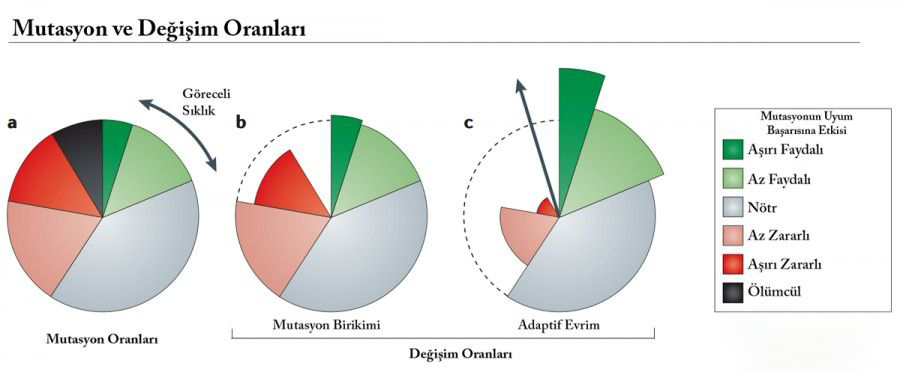

Evrim İnkarcısı Müslümanların Argümanlarının Tabutuna Son Çivi
GİRİŞ:
Evrim İnkarcılığının Temel Argümanlarını Anlamak
1) Körelmiş organlar evrime kanıt değillerdir. Çünkü bir organın henüz
faydasının bulunamaması onu faydasız yapmaz. Apandisit örneğin insan sağlığı için
önemlidir. Bu durumda körelmiş olamaz.
(İddianın Sahibi: Sözler Köşkü)
2) Faydalı mutasyonlar olamaz. Bu, mutasyonun tanımına ve doğasına aykırıdır. Mutasyon, tanımı
gereği zararlıdır ve zararlı olmak zorundadır.
(İddianın Sahibi: Sözler Köşkü)
3) Faydalı mutasyonlar olamaz. Bu, mutasyonun tanımına ve doğasına aykırıdır. Mutasyon, tanımı
gereği zararlıdır ve zararlı olmak zorundadır.
(İddianın Sahibi: Sözler Köşkü, Dr. Kasım Takım, Hayalhanem, Sorularla İslamiyet)
4) Yeraltından çıkarılan fosiller evrime kanıt olamaz. Çünkü yeraltından çıkarılan fosiller,
yeraltındaki başka fosillerle kaynaşarak oluşabilirler.
(İddianın Sahibi: Sözler Köşkü)
5) Evrim, yaratıcının yokluğuna delil değildir. Yaratıcı türleri tek tek de yaratabilir dilerse evrimleştirebilir de.
(İddianın Sahibi: Sözler Köşkü, Dr. Kasım Takım, Hayalhanem, Sorularla İslamiyet)
6) Epigenetik, mikro evrimin yerini alarak evrimi baştan çürütür.
(İddianın Sahibi: Sözler Köşkü, Hayalhanem, Sorularla İslamiyet)
7) Biyokimyasal tepkimeler birkaç saniye içinde bitmek zorundadır. Bu da biyokimyanın
evrimle çeliştiğinin bir kanıtıdır.
(Dr. Kasım Takım)
Bu okuduklarınız evrim inkarcısı müslümanların karşıt argümanlarıydı.
Şimdi tokatlama evresine geçiyoruz. İyi okumalar.
Birinci argümana cevap:
1) Körelmiş organlar evrime kanıt değillerdir. Çünkü bir organın henüz
faydasının bulunamaması onu faydasız yapmaz. Apandisit örneğin insan sağlığı için
önemlidir. Bu durumda körelmiş olamaz.
Bu, bariz bir saman adam safsatasıdır. Çünkü körelmiş organlar zaten
"hiçbir faydası olmayan organ" şeklinde tanımlanmazlar. Körelmiş organ tanımı, eski görevinden
uzaklaşan organlar için kullanılmaktadır. [1]
Apandisitin körelmiş organ olmasının sebebi, apandisitin eskiden insanlarda selüloz sindirimi yapan bir organ olmasıdır.
Atalarımız, etçil ağırlıklı beslenmeye başlayınca selülozu sindirme ihtiyacı evrimsel süreçte gitgide azalmıştır ve bunun sonucunda
apandisit eski görevini yitirip başka bir görev üstlenmiştir. Apandisitin şu anki görevi bağışıklık sistemine yardımcı olmaktır. [2]
Bu kadar gülünç ve rezil bir argüman Sözler Köşkü'nün konu hakkında ne kadar cahil olduğunu ortaya koymaktadır.
İkinci argümana cevap:
1)Faydalı mutasyonlar olamaz. Bu, mutasyonun tanımına ve doğasına aykırıdır. Mutasyon, tanımı
gereği zararlıdır ve zararlı olmak zorundadır.

Bu argüman, temel biyoloji bilgisi eksikliğinden ve cahillikten kaynaklanmaktadır.